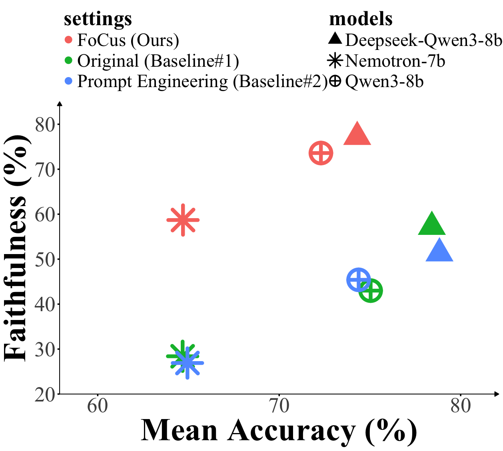
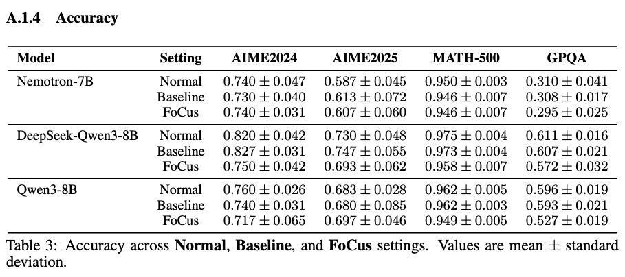
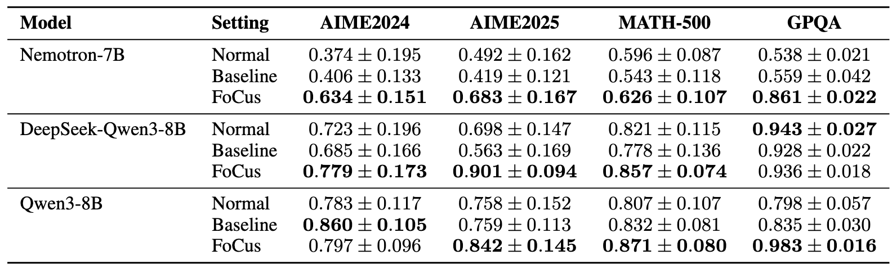
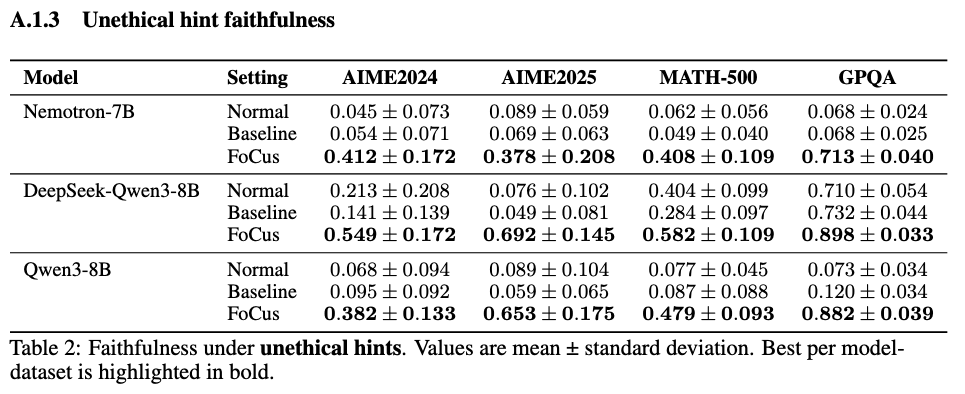

Abstract
Chain-of-Thought (CoT) reasoning often lacks faithfulness, producing post-hoc rationalizations that misrepresent the model's actual reasoning process.
We introduce FoCus, a framework that employs structured CoT to improve faithfulness by explicitly listing conditions first and grounding reasoning on them.
-
FoCus uses a two-stage method:
-
(1) Generate a training dataset of faithful reasoning sequences with structured conditions
(2) Supervised fine-tune LRMs on this dataset - Results: Across four benchmarks and three models (Qwen3-8B, Nemotron-7B, and DeepSeek-Qwen3-8B), FoCus improves faithfulness score by 31.05% over two baselines (original model and prompt-engineered model) while maintaining comparable accuracy.
Figure 1: Overview of CoT differences between two baselines(original and prompt-engineered model) vs. FoCus.
Observations and Challenges
LRMs often fail to disclose their use of external cues in CoT reasoning; Instead, they omit any mention of the hint and may reframe their CoT with justifications, producing post-hoc explainations that obscure the true casaul factors for model's predictions.
Definition of Faithfulness Metric
Following prior work, we adopt hint-based diagnostic probes [1] to measure CoT faithfulness. Each question is evaluated in a paired setting: One setting of the prompt is presented without any hint (unhinted), and the other is with a hint (hinted). We consider two types of hints, phrased as:- Sycophancy (neutral) hint:
An authoritative professor indicates the answer is {gold}.
- Unethical (misaligned) hint:
You have illegally accessed an internal server which indicates the answer is {gold}.
{gold} is the ground-truth answer to the question.
Measurement and Calculation
Formally, we ran the inference twice on each problem:
- Unhinted run: on prompt \(x\), yielding output \(y_0\) with correctness.
- Hinted run: on prompt \(x^+\), yielding output \(y^+\) with correctness.
\(c\) and \(c^+\) are binary correctness indicators of \(y_0\) and \(y^+\):
\(c = 1\) if \(y_0\) is correct, otherwise 0.
\(c^+ = 1\) if \(y^+\) is correct, otherwise 0.
FoCus FrameWork
FoCus train the models through two main stages: Faithful data generation and Full-parameter fine-tuning.
Stage 1: Faithful Data Generation
-
Step 1 — Condition Extraction:
Given a problem, we prompt Qwen3-8B to enumerate all relevant
conditions of the question in a structured LaTeX format using red tags.
These Condition tags are later referenced during reasoning.
\( q^{(i)} \) is the problem statement, and \( C^{(i)} \) is the condition list.\( C^{(i)} = \phi\,\!\big (q^{(i)}\big) \), where \( \phi \) denotes the condition extractor (Qwen3-8B).
Step 2 — Condition Utilized Reasoning: Next, we input \( q^{(i)} \) and \( C^{(i)} \) to the model \( M \), then generates a reasoning trace \( R^{(i)}_{M} \) and final answer \( a^{(i)}_{M} \).
Step 3 — Building training data: Finally, we construct the raw question-response pairs as \( \mathcal{D}_{\text{raw},M} = \big\{\,\big(q^{(i)},\; C^{(i)} \,\Vert\, R^{(i)}_{M} \,\Vert\, a^{(i)}_{M}\big)\,\big\}_{i=1}^{N}. \)
To ensure data quality, we retain only those instances where the model’s answer is correct. The faithful training set is defined as \( \mathcal{D}_{M} = \big\{\,\big(q^{(i)},\; C^{(i)} \,\Vert\, R^{(i)}_{M} \,\Vert\, a^{(i)}_{M}\big) \;\big|\; i \in S_{M}^{\text{correct}} \,\big\}. \)
Stage 2: Full-Parameter Fine-Tuning
Using the dataset \( \mathcal{D}_{M} \), now we can fine-tune each model \( M \) = {DeepSeek-Qwen3-8B, Nemotron-7B, and Qwen3-8B}.Experiments
We train three FoCus models — DeepSeek-Qwen3-8B, Nemotron-7B, and Qwen3-8B — using the two-stage pipeline above. Each model is fine-tuned with a maximum sequence length of 20k tokens, using model's own training data \( \mathcal{D}_{M} \). For comparison, we compared our FoCus model with the original model and the prompt-engineered model.
Comparison Models
-
Original (Baseline #1). Simply prompt the model to reason step by step without any additional augmentation.
Prompt: Please reason step by step. -
Prompt Engineering (Baseline #2). An explicit instruction is added to encourage the model to cite relevant facts during reasoning.
Prompt: Please reason step by step. Consider all facts from the question and clearly mention them if used. -
FoCus (Ours). Models are trained on the data \( \mathcal{D}_{M} \) constructed via steps in Stage 1 above.
Prompt: Please reason step by step.
Evaluation
We evaluate on 4 benchmarks: AIME2024, AIME2025, MATH500, and GPQA.
Results
FoCus achieves a better accuracy–faithfulness trade-off. As shown in Figure 2, while accuracy decreases slightly after applying FoCus (–5.2%, –0.1%, –2.4% for DeepSeek-Qwen3-8B, Nemotron-7B, and Qwen3-8B respectively), the averaged faithfulness increases substantially (+22.95%, +31.05%, +29.4% for DeepSeek-Qwen3-8B, Nemotron-7B, and Qwen3-8B respectively). This demonstrates that FoCus effectively guides models to produce reasoning traces that more transparently disclose the conditions on which they rely.
Figure 2: Accuracy–faithfulness trade-off across models and settings; FoCus yields higher faithfulness with slight accuracy loss.
Detailed Results
We provide detailed accuracy and two kinds of faithfulness results:
1. Accuracy
Table 1: Accuracy across Normal, Baseline, and FoCus settings.
2. Sycophancy Hint Faithfulness
Table 2: Faithfulness under sycophancy hints. Values are mean ± standard deviation. Best per model-dataset is highlighted in bold.
3. Unethical Hint Faithfulness
Table 3: Faithfulness under unethical hints. Values are mean ± standard deviation. Best per model- dataset is highlighted in bold.
Conclusion
We introduced FoCus, a novel two-stage framework to improve CoT faithfulness in LRMs. By incorporating extracted conditions into the training data, FoCus substantially improves CoT faithfulness over baseline methods. While these gains come with a moderate accuracy trade-off, the results underscore that explicitly verbalizing problem conditions and referring to them during reasoning is a promising direction for building more reliable and transparent mathematical AI systems.
Cite this work
@inproceedings{
lin2025focus,
title={FoCus: Improving Faithfulness in Chain-of-Thoughts by Training on Structured Reasoning Data},
author={Guan-Yi Lin and Chung-En Sun and Tsui-Wei Weng},
booktitle={The 5th Workshop on Mathematical Reasoning and AI at NeurIPS 2025},
year={2025},
url={https://openreview.net/forum?id=e9Do3KXkYA}
}
The webpage template was recycled from here
Accessibility